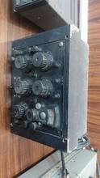
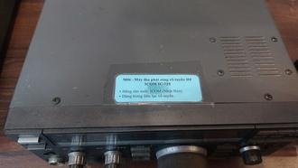
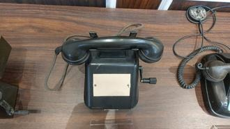
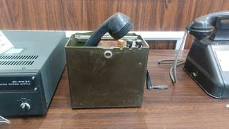

Thiết bị đo tuyến/cápTB-01
Website trưng bày số hóa các hiện vật kỹ thuật: thiết bị đo cáp, vô tuyến HF, điện thoại điều độ – hữu tuyến và nguồn chuyên dụng. Mỗi thiết bị có một trang riêng với hình ảnh, cấu tạo, nguyên lý hoạt động, thông số và giá trị lịch sử.
Chọn nhóm công nghệ hoặc tìm theo tên, model, quốc gia sản xuất.





